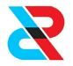

Case study
Production Process Automation for a Pharmaceutical Brand.
The healthcare sector across the world experienced a shockwave in terms of
hospitalization & production of necessary drugs/testing kits in 2019-20 as we were hit by
he Corona Virus pandemic. The need for covid testing increased exponentially everywhere. Along
with the RTPCR tests, which gave the results in a couple of days, the development of Rapid Antigen
(RAT) Covid testing kits started. It is a quick home test to check if you may have COVID-19 and provides
a result within 15 to 30 minutes with good accuracy.
production had to match the required demand for the RAT kits. We designed & manufactured affordable
semi-automatic liquid dispensing machines for a Pharmaceutical brand, which improved the production rate of one
of the components in the RAT kit
which ultimately increased their production with extra provided ease in the production process.